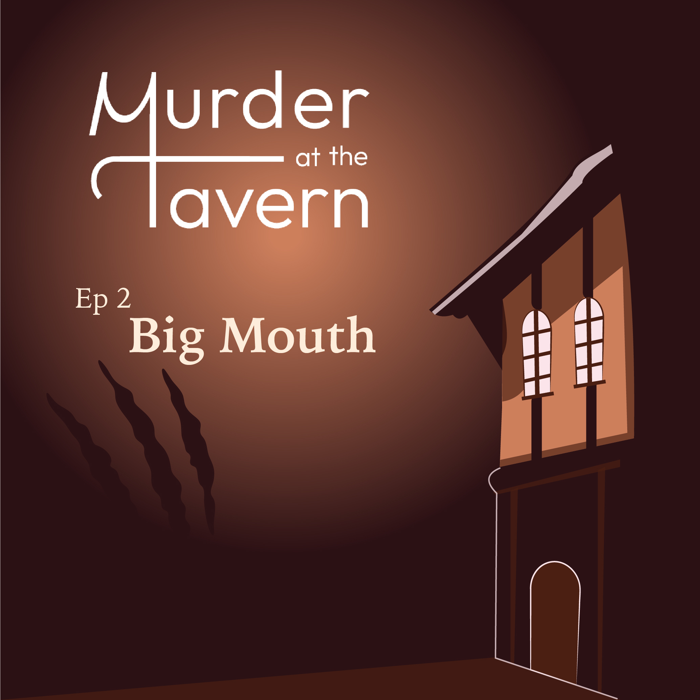

Episodes



Meet the Characters
Murder at the Tavern Community
The magic of Murder at the Tavern doesn't have to end when the episode stops. Dive deeper into the world of fantasy and mystery by joining our dedicated Discord server! Here, you can:
- Share Theories
- Chat with Creators
- Unravel Clues Together
Our Discord server is your space to immerse yourself in the Murder at the Tavern universe and connect with a community of curious minds and fantasy lovers.
Let's solve the mystery together!